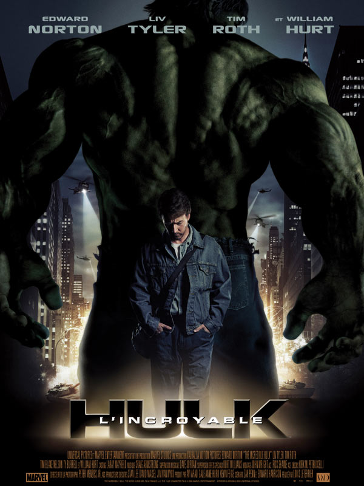

L'homme en armure
Introduction
Iron Man … Grâce à ses comics, ses trois films éponymes ou encore ses nombreuses apparitions dans les autres films de la franchise, il est devenu un héros incontournable de cette dernière, connu des plus petits comme des plus grands et interprété par Robert Downey Jr.
Création du personnage d'Iron Man
Le personnage d’Iron Man est un
super-héros imaginé et créé par Stan Lee, développé par Larry Lieber et dessiné par Don Heck. Sa première apparition se fait dans un comic de Marvel
en 1963, et il obtient son propre comic en 1968, qui sera publié jusqu’en 1996 par l’éditeur.
« Je me suis lancé un défi. À l'époque, c'était l'apogée de la guerre et les lecteurs, les jeunes lecteurs détestaient l'armée et la guerre, alors j'ai créé un héros qui la représentait au centième degré […] Et il est devenu extrêmement populaire. »
Iron Man, comme beaucoup d’héros à cette époque, a été créé dans un contexte de guerre froide opposant les États-Unis et ses alliés face à l’URSS et leurs propres alliés. C’est pourquoi, lors des premiers numéros, on pouvait voir Iron Man se battre face à des communistes. Le personnage de Tony Stark, milliardaire et fabriquant d’armes, participait pleinement à la propagande face à l’URSS. Douze ans après l’arrêt de publication des comics Iron-Man, le héros est adapté au cinéma, avec la sortie du premier des trois films Iron Man en 2008, qui marquera également le lancement du première acte de l’Univers Cinématographique Marvel (MCU).
Stan Lee, créateur de nombreux héros
de la franchise Marvel,
comme Spider Man, Docteur Strange,
Hulk, Thor et de nombreux autres.
L'histoire d'Iron Man
Tony Stark est un riche homme d’affaires américain héritier de Stark Industries, entreprise d’armement militaire léguée par son père, Howard Stark, qui distribue des armes à l’armée américaine. En déplacement en Afghanistan, alors qu’il présente sa dernière invention, un très puissant missile du nom de Jéricho, il est enlevé après une attaque à la bombe sur sa voiture par une organisation de terroristes nommée « Les Dix Anneaux ». Il est gravement blessé lorsqu’il se réveille, avec un électro-aimant, implanté par le professeur Yinsen et alimenté par une batterie de voiture pour éviter à des éclats d’obus d’atteindre son cœur et qui permet de le maintenir en vie. Avec l’aide du professeur, il créé une armure autour d’un réacteur miniaturisé, devant la surveillance des terroristes qui veulent que Stark reproduise son missile, et parvient à s’échapper. De retour après plusieurs mois de captivité, il décide d’arrêter la fabrication d’armes, et se met à créer une nouvelle armure, la sienne s’étant détruite lors de la fuite, afin de dissoudre le groupe de terroriste.
Trailer du film Iron Man
Iron Man et l'intelligence artificielle
L’univers cinématographique Marvel est rempli de Super-Héros, mais également de technologies… armes, inventions diverses et variées, mais aborde également l'Intelligence Artificielle. C’est le cas de JARVIS, l’assistant informatique de Tony Stark (Iron Man), qui est une intelligence artificielle développée par le héros pour l’assister dans la majorité de ces travaux. Son nom est hommage à Edwin Jarvis, le majordome d’Howard Stark, son père. JARVIS apparaît dans les trois films Iron Man, ainsi que dans Avengers, Avengers : L’Ère d’Ultron (dont le film parle du combat entre JARVIS et une autre intelligence artificielle du nom d’Ultron), ainsi que dans Avengers : Endgame (où on le voit apparaître sous forme humaine au coté d’Howard Stark). JARVIS est un élément très important du MCU.
L’intelligence Artificielle fait souvent forme de fantasme pour de nombreuses personnes, mais elle est peut-être notamment dangereuse, à cause de son auto apprentissage
(appelé « Deep Learning »), ou alors de la pollution qu’elle cause.
C’est ce dernier point que nous étudieront dans le prochain article.
Lire l'article sur les problèmes causés par l'IA
Ces films peuvent vous intérésser
- 
-